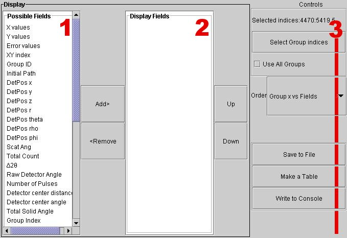

Table Generator
Contents |
Introduction:
The ISAW Table Generator is used to create a table arranged by user-specified fields.
Getting Started:
Launching Table Generator
Before launching the table generator, there must be data loaded in the tree.
Click on the DataSet of interest and then follow the menus:
View > Table Generator

Table Generator Window:
1 Possible Fields
This displays the fields available for use within a table.
Select a field and press the Add button to add it to the Display Fields section.
2 Display Fields
This displays the fields that will be used in the table.
Select a field and press the Remove button to remove it from the Display Fields Section.
Use the Up and Down buttons to change the order of the display fields.
3 Controls
Selected Indices – This readout displays the [identifying numbers of the] currently selected data blocks.
Select Group Indices – This button will open a text field that allows the user to enter the group ID of data blocks to be selected.
Use All Groups – Check this box to add all available groups for the current Data Set to the table.
Order – Use this menu to change the appearance and layout of the table.
Save to File – This button will open a file chooser that allows the user to save the current table as a separate file. Users must assign a file extension that is supported by a program of his/her choosing.
Make a Table – Pressing this button will display a table with the currently selected display fields and group indices.
Write to Console – Pressing this button will display table data in the console ISAW was started from.
Note: The ISAW Table Generator has a built in spreadsheet adaptor associated with many of the tables. If a rectangular selection is made in a table and then copied, it can easily be pasted into any spreadsheet editor.
Viewer Menus
File
Save As New DataSet – Select this option to save the current view as a new DataSet. The new DataSet will appear in the tree under “Modified.”
Save Image – Select this option to save the visible portion of the viewer window as a JPEG picture file.
Print – This option prints the visible portion of the viewer window as it appears on the screen.
Save Object State – This option is not supported by the scrolled graph view.
Load Object State – This option is not supported by the scrolled graph view.
Close Viewer – This option closes the scrolled graph view window.
Edit
Sum – This option is used to sum all counts of either the selected or unselected spectra.
Delete – This option is used to delete all counts of either the selected or unselected spectra.
Clear – Use this option to clear all select flags.
Sort by – This option is used to sort the graph data.
View
Additional View – This option creates a duplicate table generator view window. This new window can then be changed to a different view type.
Image View – This option changes the current window to an image view window.
3D View – This option changes the current window to a 3D view window.
HKL Slice View – This option changes the current window to a HKL Slice view window.
Contour View – This option changes the current window to a Contour view window.
Scrolled Graph View - This option changes the current window to a Scrolled Graph view window.
Selected Graph View - This option changes the current window to a Selected Graph view window.
Selected Table View – This option changes the current window to a Selected Table View window.
Table Generator – This option changes the current window to a Table Generator window.
Axis Conversions – This option converts the independent variable to another type of measurement.
Options
Link Views – Select this option to link the current view with any additional views of the same data set that also have this option selected. This is on by default so that pointing the cursor in one view affects all views of the same data.